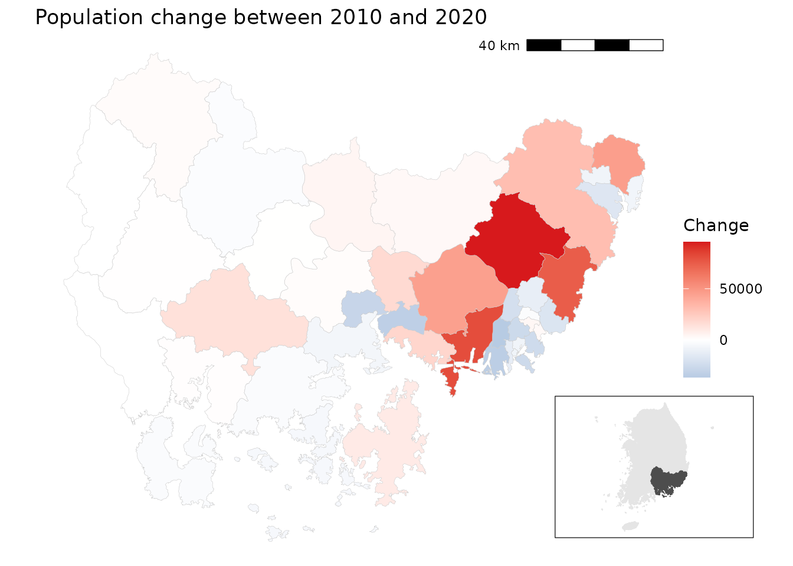
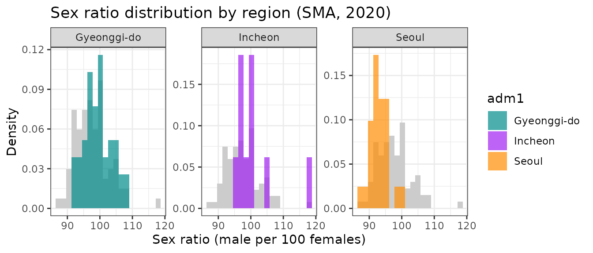
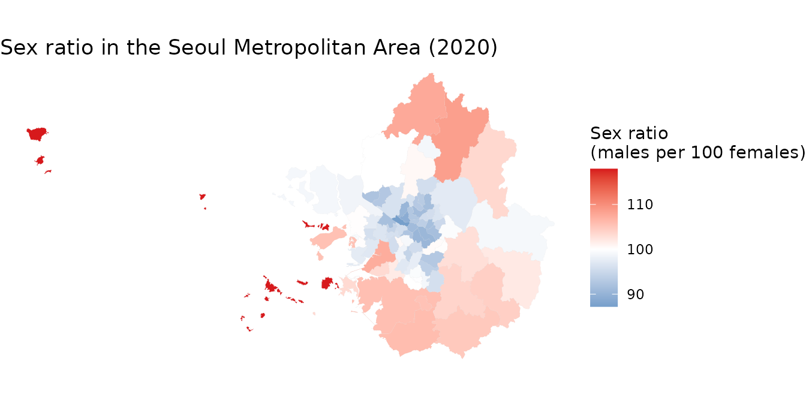
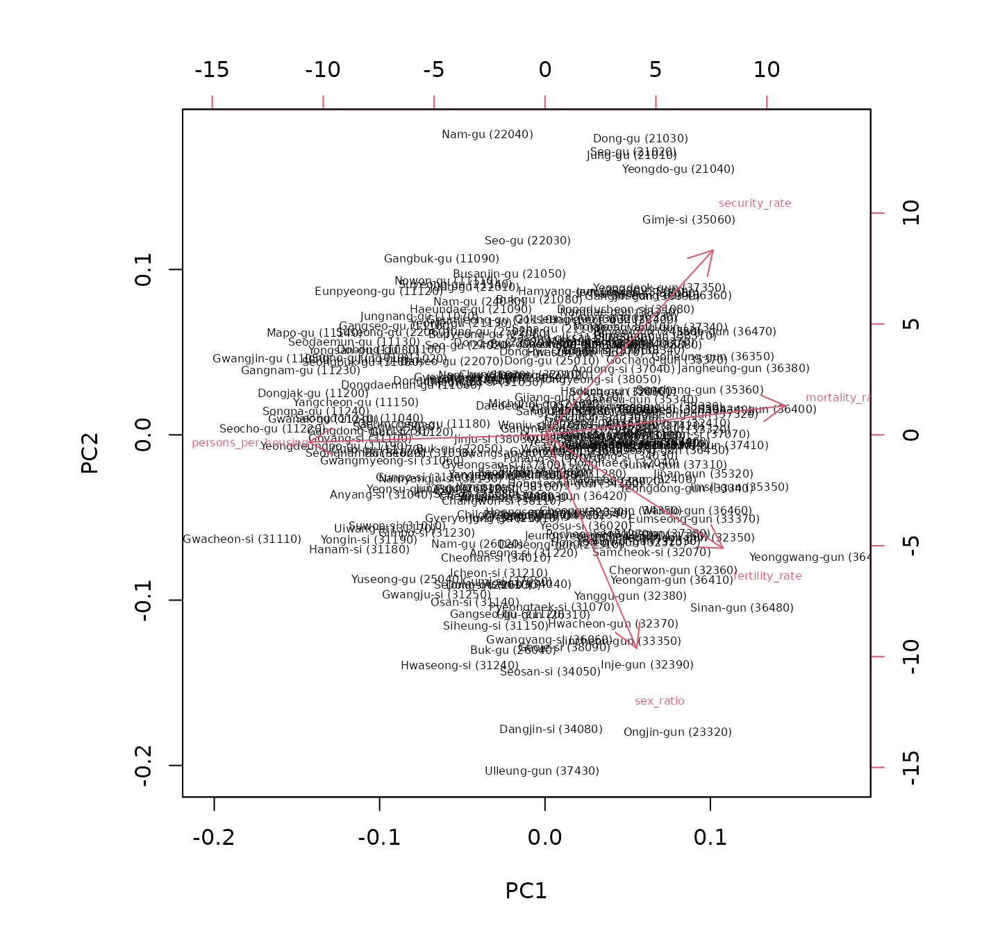

Regional analysis with tidycensuskr
July 10, 2026
Source:vignettes/v02_regional_analysis.Rmd
v02_regional_analysis.RmdExample 1: Population change in the Gyeongsangnam-do region
Design idea
- Load 2010 and 2020 census population data.
- Merge with 2020 district boundaries.
- Calculate the population change
(
change = 2020 - 2010). - Subset to Gyeongsangnam-do, Busan, and Ulsan.
- Create a diverging choropleth map to show population increase/decrease, with an inset map of Korea highlighting the region.
Data prep
# Load 2020 boundaries
data(adm2_sf_2020)
# Load census population data for 2010 and 2020
df_2010_pop <- anycensus(year = 2010,
codes = c("Gyeongsangnam-do", "Busan", "Ulsan"),
type = "population")
df_2020_pop <- anycensus(year = 2020,
codes = c("Gyeongsangnam-do", "Busan", "Ulsan"),
type = "population")
# Merge with spatial data and compute population change
sf_target <- adm2_sf_2020 |>
inner_join(df_2010_pop, by = "adm2_code") |>
inner_join(df_2020_pop, by = "adm2_code") |>
mutate(change = `all households_total_prs.y` - `all households_total_prs.x`)A choropleth map with an inset map
# Choropleth map for population change
map <- ggplot(sf_target) +
geom_sf(aes(fill = change), color = "gray80", size = 0.1) +
labs(title = "Population change between 2010 and 2020") +
scale_fill_gradient2(
low = "#2C7BB6", mid = "white", high = "#D7191C",
midpoint = 0,
name = "Change"
) +
theme_void() +
annotation_scale(
location = "tr", width_hint = 0.25, text_cex = 0.7, line_width = 0.7
)
# National boundary (union of all districts)
sf_korea_boundary <- adm2_sf_2020 |>
summarise(geometry = st_union(geometry))
# Target region boundary (union of selected provinces/cities)
sf_target_boundary <- sf_target |>
summarise(geometry = st_union(geometry))
# Inset map: whole Korea + highlighted target region
korea_inset <- ggplot() +
geom_sf(data = sf_korea_boundary, fill = "grey90", color = "grey90") +
geom_sf(data = sf_target_boundary, fill = "grey30", color = "grey30") +
theme_void()
# Combine main map and inset
cowplot::ggdraw() +
cowplot::draw_plot(map) +
cowplot::draw_plot(
korea_inset, x = 0.7, y = 0.05, width = 0.25, height = 0.25
) +
draw_grob(grid::rectGrob(gp = gpar(col = "black", fill = NA, lwd = 0.6)),
x = 0.7, y = 0.05, width = 0.25, height = 0.25)
In the Gyeongsangnam-do region, large metropolitan cities such as Busan and Ulsan show population decline, while surrounding suburban areas demonstrate notable population gains. Rural areas in the western part of the province exhibit relatively stable population trends.Example 2: Bivariate mapping of population vs. tax
Design idea
- Load 2020 population and tax datasets.
- Because tax data is not available at the Gu level of large
cities, aggregate district-level (
adm2_code) data to the 4-digit prefix level. - Merge population and tax data.
- Use
biscale::bi_class()to create a 3*3 bivariate classification of population (x) vs. tax (y). - Draw a bivariate choropleth map with a custom legend.
Data prep
# Load census data
df_2020_pop <- anycensus(year = 2020,
type = "population")
df_2020_tax <- anycensus(year = 2020,
type = "tax")
# Merge population with boundaries
adm2_sf_2020_pop <- adm2_sf_2020 |>
left_join(df_2020_pop, by = "adm2_code") |>
mutate(
adm2_code_chr = as.character(adm2_code),
adm2_prefix4 = substr(adm2_code_chr, 1, 4),
last_digit = substr(adm2_code_chr, 5, 5)
)
# Aggregate smaller units (adm2_code ending not with 0) into 4-digit groups
sf_union_needed <- adm2_sf_2020_pop |>
filter(last_digit != "0") |>
group_by(adm2_prefix4) |>
summarise(
across(where(is.numeric), ~ sum(.x, na.rm = TRUE)),
geometry = st_union(geometry),
.groups = "drop"
) |>
mutate(adm2_code = as.numeric(paste0(adm2_prefix4, "0")))
# Combine aggregated units with existing "0"-ending districts
adm2_sf_2020_unioned <- adm2_sf_2020_pop |>
filter(last_digit == "0") |>
bind_rows(sf_union_needed)
# Join with tax data
sf_final <- adm2_sf_2020_unioned |>
left_join(df_2020_tax, by = "adm2_code")A bivariate choropleth map
# Create 3x3 bivariate classes (population vs tax)
bi_data <- bi_class(
sf_final,
x = `all households_total_prs`,
y = income_general_mkr,
style = "quantile",
dim = 3
)
# Bivariate legend
legend <- bi_legend(
pal = "DkCyan", dim = 3,
xlab = "Low to High population",
ylab = "Low to High tax",
size = 7
)
# Mapping
cowplot::ggdraw() +
cowplot::draw_plot(
ggplot() +
geom_sf(data = bi_data, aes(fill = bi_class), color = NA) +
bi_scale_fill(pal = "DkCyan", dim = 3, guide = "none") +
bi_theme() +
labs(title = "Population vs Tax (2020)") +
theme(plot.title = element_text(size = 10))
) +
cowplot::draw_plot(legend, x = 0.7, y = 0.1, width = 0.3, height = 0.3)
The bivariate map highlights the strong centrality of the Seoul Metropolitan Area. Both the capital region and the southeastern manufacturing hubs exhibit high population and high tax revenues. In contrast, most other regions—such as Gangwon and Gyeongbuk, apart from a few metropolitan centers—fall into the low population–low tax category.
Example 3: Sex ratio in Seoul Metropolitan Area
Design idea
- Load 2020 population data for Seoul, Gyeonggi-do, and Incheon.
- Calculate the sex ratio (
male/female * 100). - Visualize the distribution of sex ratios:
- Show the overall distribution as a grey background histogram.
- Overlay regional distributions (Seoul, Incheon, Gyeonggi-do) in color with facets.
- Map the sex ratio across districts, using a diverging color scale centered on 100 (balanced sex ratio).
Data prep
# Load population data for the Seoul Metropolitan Area (SMA)
df_sma <- anycensus(
year = 2020,
codes = c("Seoul", "Gyeonggi-do", "Incheon"),
type = "population"
)
# Calculate sex ratio (males per 100 females)
df_sma <- df_sma |>
mutate(
sex_ratio = `all households_male_prs` / `all households_female_prs` * 100
)
# Extract overall distribution (all SMA combined)
df_all <- df_sma |>
select(sex_ratio)Histograms
ggplot() +
# Background: overall distribution across all SMA
geom_histogram(
data = df_all,
aes(x = sex_ratio, y = after_stat(density)),
bins = 20, fill = "grey80", color = NA, alpha = 1
) +
# Regional distributions
geom_histogram(
data = df_sma,
aes(x = sex_ratio, y = after_stat(density), fill = adm1),
bins = 20, alpha = 0.7, color = NA, position = "identity"
) +
facet_wrap(~ adm1, ncol = 3, scales = "free_y") +
scale_fill_manual(values = c(
"Seoul" = "darkorange",
"Incheon" = "purple",
"Gyeonggi-do" = "cyan4"
)) +
labs(
title = "Sex ratio distribution by region (SMA, 2020)",
x = "Sex ratio (male per 100 females)",
y = "Density"
) +
theme_bw()
A choropleth map
# Merge SMA population data with boundaries
adm2_sf_2020_sma <- adm2_sf_2020 |>
inner_join(df_sma, by = "adm2_code")
# Choropleth map for sex ratio
ggplot(adm2_sf_2020_sma) +
geom_sf(aes(fill = sex_ratio), color = "gray", size = 0.01) +
scale_fill_gradient2(
low = "#2C7BB6", mid = "white", high = "#D7191C",
midpoint = 100, # 100 = equal male/female
name = "Sex ratio\n(males per 100 females)"
) +
labs(title = "Sex ratio in the Seoul Metropolitan Area (2020)") +
theme_void()
Within the Seoul Metropolitan Area, the central city districts (Seoul) show a higher proportion of females, whereas the outer suburban areas tend to show male-dominated populations. This highlights spatial differences in gender distribution across the metropolitan region.
Example 4: Socioeconomic profiling
Context
Regional socioeconomic status can be profiled using multiple indicators such as housing conditions, population characteristics, mortality rates, and social security usage. Principal Component Analysis (PCA) is a useful technique to reduce the dimensionality of such multivariate data. It helps identify groups of correlated variables and summarize them into a small set of interpretable components.
Design idea
- Using
anycensus()function for multiple times, load multiple datasets from the 2020 census, including housing, population, mortality, and social security data. - Aggregate the data to the basic local government level using the
4-digit prefix of
adm2_codeinto a single wide-format data frame - Variables are aggregated (summing counts, averaging rates) to reflect the characteristics of basic local governments.
- Perform PCA on the selected socioeconomic indicators and visualize the results using a biplot
data prep
library(tidycensuskr)
library(dplyr)
library(ggplot2)
library(janitor)
# Load data
sf_2020 <- data(adm2_sf_2020)
# housing
df_hou <- anycensus(year = 2020, type = "housing", level = "adm2", adm2_type = "atn", aggregator = sum)
df_hou <- df_hou |>
dplyr::group_by(adm1_code, adm2_code, year, type) |>
dplyr::mutate(dplyr::across(
dplyr::everything(),
~ ifelse(is.na(.), .[which(!is.na(.))], .)
)) |>
dplyr::ungroup() |>
dplyr::distinct()
# population
df_pop <- anycensus(year = 2020, type = "population", level = "adm2", adm2_type = "atn", aggregator = sum) |>
dplyr::select(adm1, adm1_code, adm2, adm2_code, year, dplyr::starts_with("all households"))
df_fert <- anycensus(year = 2020, type = "population", level = "adm2", adm2_type = "atn", aggregator = mean, weight_type = "population", weight_col = "all households_total_prs") |>
dplyr::select(dplyr::matches("(adm|year|fertility)"))
# mortality
df_mort <- anycensus(year = 2020, type = "mortality", level = "adm2", adm2_type = "atn", aggregator = mean, weight_type = "population", weight_col = "all households_total_prs") |>
dplyr::select(-`all households_total_prs`)
# social security
df_ss <- anycensus(year = 2020, type = "social security", level = "adm2")
# Combine data frames
df_wide <- Reduce(
function(x, y) {
left_join(
x, y,
by = c("adm1", "adm1_code", "adm2", "adm2_code", "year")
)
},
list(
df_hou,
df_pop,
df_fert,
df_mort,
df_ss
)
) |>
dplyr::select(-dplyr::starts_with("type"))
# reorganize the variables by basic local governments
df_wide_re <-
df_wide |>
dplyr::mutate(adm2_code_ = paste0(substr(adm2_code, 1, 4), "0")) |>
dplyr::group_by(adm2_code_) |>
dplyr::summarize(
dplyr::across(
dplyr::matches("households|income|housing|grdp|security"),
~ sum(.x, na.rm = TRUE)
),
dplyr::across(
dplyr::matches("fertility|causes"),
~ mean(.x, na.rm = TRUE)
),
adm2 = dplyr::first(adm2)
) |>
dplyr::ungroup() |>
dplyr::transmute(
adm2_code_ = adm2_code_,
adm2 = adm2,
persons_per_housing = `all households_total_prs` / `housing types_total_cnt`,
sex_ratio = 100 * `all households_male_prs` / `all households_female_prs`,
mortality_rate = `all causes_total_p1p`,
fertility_rate = fertility_total_brt,
security_rate = 100 * (`basic living security_female_prs` + `basic living security_male_prs`) /
`all households_total_prs`
)PCA results
Looking at the rotation matrix, the first component is moderately correlated with fertility and mortality rates and basic living income beneficiary rate (basic living security hereafter), and negatively correlated with persons per housing unit. The second component is dominantly correlated with sex ratio to the negative and basic living security rate to the positive.
# Run PCA
prc_df <-
df_wide_re |>
dplyr::select(3:7) |>
as.data.frame() |>
prcomp(scale = TRUE)
# Rotation by variables
prc_df$rotation |> as.data.frame() |> round(3)## PC1 PC2 PC3 PC4 PC5
## persons_per_housing -0.554 -0.024 -0.229 0.744 -0.296
## sex_ratio 0.215 -0.698 -0.573 0.103 0.356
## mortality_rate 0.563 0.096 -0.360 0.018 -0.737
## fertility_rate 0.418 -0.371 0.669 0.488 -0.044
## security_rate 0.394 0.604 -0.203 0.445 0.490Biplot
The biplot using the first and second principal components is used to visualize these relationships. The biplot displays both the districts (points) and the variables (arrows), allowing us to interpret the relationships between different socioeconomic factors and how they vary across regions. We label the districts with their names and codes for better identification.
# Proper labeling for biplot for BLGs
adm2labels <- paste0(df_wide_re$adm2, " (", df_wide_re$adm2_code_, ")")
rownames(prc_df$x) <- adm2labels
# Biplot with PC1 and PC2
biplot(prc_df, choices = c(1, 2), cex = 0.5, arrow.len = 0.2)
Interestingly, the biplot reveals that sex ratio is independent of crowding and mortality rate, whereas basic living security rate is negatively correlated, as evidenced by the orientation of each component’s vectors compared to others. Districts in Seoul are mostly located in the upper left quadrant, indicating lower sex ratios and higher basic living security rates, while suburban areas in Gyeonggi-do tend to have higher sex ratios and lower basic living security rates. Inland and border areas are generally associated with higher basic living security rates, indicating potential socioeconomic challenges in these regions. This analysis provides insights into the socioeconomic disparities across different regions within South Korea.